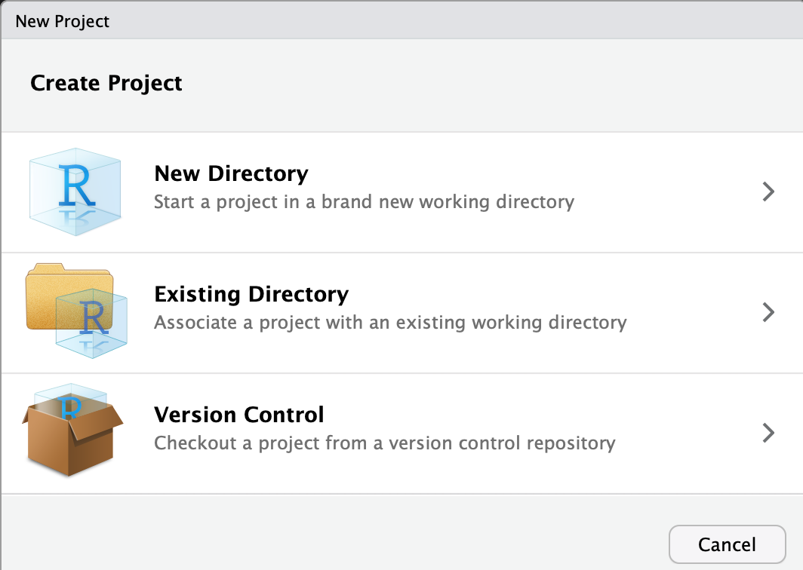
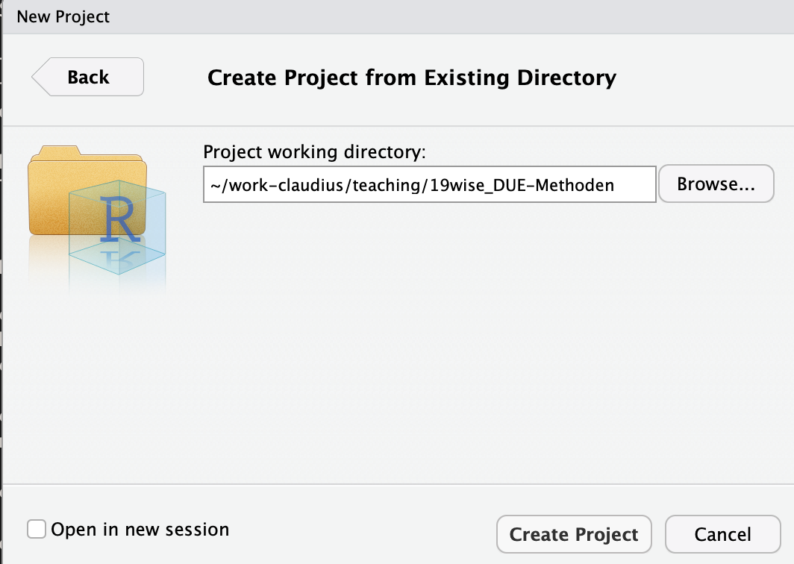
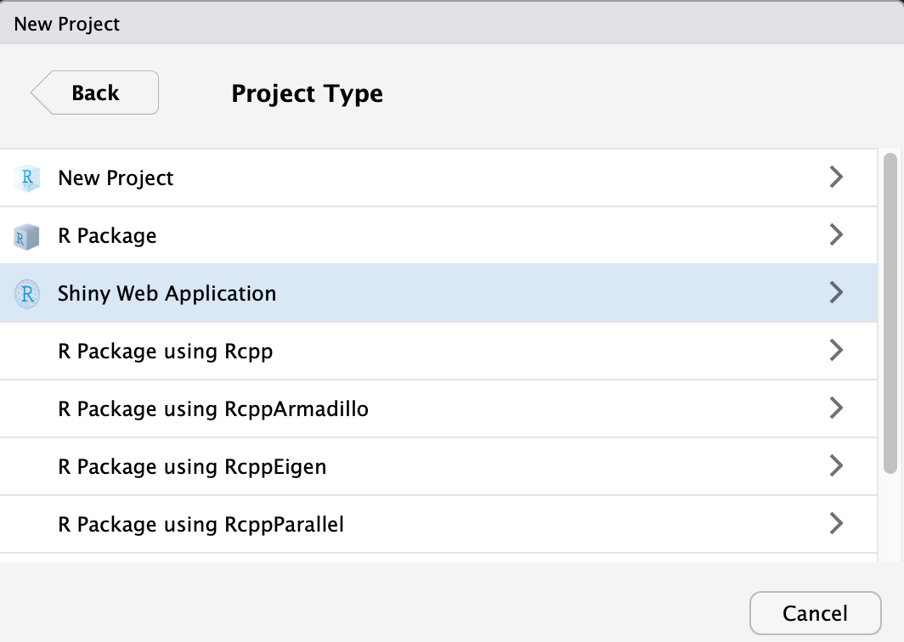

Chapter 2 Einrichtung
2.1 Installation von R und R-Studio
Die Installation von R ist in der Regel unproblematisch. Auf der R homepage wählt man unter dem Reiter ‘Download’ den Link ‘CRAN’ aus, wählt einen Server in der Nähe und lädt sich dann die R Software herunter. Danach folgt man den Installationshinweisen.
Im zweiten Schritt muss noch das Programm ‘R-Studio’ installiert werden. Hierbei handelt es sich um eine grafische Oberfläche für R, welche uns die Arbeit enorm erleichtern wird. Das Programm kann hier heruntergeladen werden. Bitte darauf achten ‘RStuio Desktop’ zu installieren.
2.2 Die R Studio Oberfläche
Nach dem Installationsprozess öffnen wir R Studio zum ersten Mal. Der folgende Screenshop zeigt die verschiedenen Elemente der Oberfläche, deren Funktion im folgenden kurz erläutert wird. Vieles ergibt sich hier aber auch durch working by doing. Im folgenden werden nur die Bereiche der Oberfläche beschrieben, die am Anfang unmittelbar relevant für uns sind.

Der Skriptbereich (1) ist ein Texteditor wie Notepad - nur mit zusätzlichen Features wie Syntax Highlighting für R, sodass es uns leichter fällt R Code zu schreiben. Hier werden wir unsere Skripte verfassen.
Die Konsole (2) erlaubt es uns über R direkt mit unserem Computer zu interagieren. R ist eine Programmiersprache. Das bedeutet, wenn wir den Regeln der Sprache folgen und uns in einer für den Computer verständlicher Art und Weise ausdrücken, versteht der Computer was wir von ihm wollen und führt unsere Befehle aus. Wenn wir in die Konsole z.B.
2+2eingeben, dann ist das valider R code. Wenn wir dann Enter drücken versteht der Computer unseren Befehl und führt die Berechnung aus. Die Konsole ist sehr praktisch und den Effekt von R Code direkt zu beobachten. Wenn wir etwas in der Console ausführen wollen, das wir vorher im Skriptbereich geschrieben haben, können wir den Text markieren und dann auf den ButtonRun(3) drücken: dann kopiert R Studio den Code in die Konsole und führt ihn aus.Für den Bereich oben rechts haben wir in der Standardkonfiguration von R Studio drei Optionen, die wir durch Klicken auf die Reiter auswählen können. Der Reiter Environment (4) zeigt uns alle bisher definierten Objekte an (mehr dazu später). Der Reiter History (5) zeigt an, welchen Code wir in der Vergangenheit ausgeführt haben. Der Reiter Connections (6) braucht uns aktuell nicht zu interessieren.
Auch für den Bereich unten rechts haben wir mehrere Optionen: Der Bereich Files (7) zeigt uns unser Arbeitsverzeichnis mit allen Ordnern und Dateien an. Das ist das gleichte, was wir auch über den File Explorer unserer Betriebssystems sehen würden. Der Bereich Plots (8) zeigt uns eine Vorschau der Abbildungen, die wir durch unseren Code produzieren. Die anderen Bereiche brauchen uns aktuell noch nicht zu interessieren.
Wenn wir ein neues R Skript erstellen wollen, können wir das über den Button Neu (9) erledigen. Wir klicken darauf und wählen die Option ‘R Skript’. Mit den alternativen Dateiformaten brauchen wir uns aktuell nicht beschäftigen.
Der Botton Neues Projekt anlegen (10) erstellt eine neues R Studio Projekt - mehr dazu in Kürze.
Der Button Öffnen (11) öffnet Dateien im Skriptbereich.
Die beiden Buttons Speichern (12) und Alles speichern (13) speichern das aktuelle, bzw. alle im Skriptbereich geöffnenten Dateien.
Die restlichen Buttons und Fenster in R Studio werden wir im Laufe der Zeit kennenlernen.
Es macht Sinn, sich einmal die möglichen Einstellungsmöglichkeiten für R Studio anzuschauen und ggf. eine andere Darstellungsversion zu wählen.
2.3 Einrichtung eines R Projekts
Im folgenden werden wir lernen wie man ein neues R Projekt anlegt, R Code schreiben und ausführen kann.
Wann immer wir ein neues Programmierprojekt starten sollten wir dafür einen eigenen Ordner anlegen und ein so genannten ‘R Studio Projekt’ erstellen. Das hilft uns den Überblick über unsere Arbeit zu behalten, und macht es einfach Code untereinander auszutauschen.
Ein Programmierprojekt kann ein Projekt für eine Hausarbeit sein, die Mitschriften für eine Vorlesungseinheit, oder einfach der Versuch ein bestimmtes Problem zu lösen, z.B. einen Datensatz zu visualisieren.
Die Schritte zur Erstellung eines solchen Projekts sind immer die gleichen:
- Einen Ordner für das Projekt anlegen.
- Ein R-Studio Projekt in diesem Ordner erstellen.
- Relevante Unterordner anlegen.
Wir beschäftigen uns mit den Schritten gleich im Detail, müssen vorher aber noch die folgenden Konzepte diskutieren: (1) das Konzept eines Arbeitsverzeichnisses (working directory) und (2) die Unterscheidnug zwischen absoluten und relativen Pfaden.
2.3.1 Arbeitsverzeichnisse und Pfade
Das Arbeitsverzeichnis ist ein Ordner auf dem Computer, in dem R standardmäßig allen Output speichert. Wenn wir mit Projekten arbeiten ist das Arbeitsverzeichnis der Ordner, in dem das R-Projektfile abgelegt ist, ansonsten ist es euer Benutzerverzeichnis. Wir können uns das Arbeitsverzeichnis mit der Funktion getwd() anzeigen lassen. In meinem Fall ist das Arbeitsverzeichnis das folgende:
#> [1] "/Users/claudius/work-claudius/general/paper-projects/packages/SocioEconMethodsR"Wenn ich R nun sagen würde ein File unter dem Namen test.pdf speichern, würde es am folgenden Ort gespeichert werden:
#> [1] "/Users/claudius/work-claudius/general/paper-projects/packages/SocioEconMethodsR/test.pdf"R geht in einem solchen Fall immer vom Arbeitsverzeichnis aus. Da wir im vorliegenden Fall den Speicherort relativ zum Arbeitsverzeichnis angegeben haben,sprechen wir hier von einem relativen Pfad.
Alternativ können wir den Speicherort auch als absoluten Pfad angeben. In diesem Fall geben wir den kompletten Pfad, ausgehend vom Root Verzeichnis des Computers, an. Wir würden R also explizit auffordern, das File an foldengem Ort zu speichern:
#> [1] "/Users/claudius/work-claudius/general/paper-projects/packages/SocioEconMethodsR/test.pdf"Wir werden hier immer relative Pfade verwenden. Relative Pfade fast immer die bessere Variante, da es uns erlaubt den gleichen Code auf verschiedenen Computern zu verwenden. Denn wir man an den absoluten Pfaden hier erkennen kann, sehen diese auf jedem Computer anders aus und es ist dementsprechend schwierig, Code miteinander zu teilen.
Wir lernen mehr über dieses Thema wenn wir uns später mit Dateninput und -output beschäftigen.
2.3.2 Schritt 1: Projektordner anlegen
Zuerst müssen Sie sich für einen Ordner auf Ihrem Computer entscheiden, in dem alle Daten, die mit ihrem Projekt zu tun haben, also Daten, Skripte, Abbildungen, etc. gespeichert werden sollen und diesen Ordner gegebenenfalls neu erstellen. Es macht Sinn, einen solchen Ordner mit einem informativen Namen ohne Leer- und Sonderzeichen zu versehen, z.B. SoSe19-Methodenkurs.
Dieser Schritt kann theoretisch auch gemeinsam mit Schritt 2 erfolgen.
2.3.3 Schritt 2: Ein R-Studio Projekt im Projektordner erstellen
Wir möchten nun R Studio mitteilen den in Schritt 1 erstellten Ordner als R Projekt zu behandeln. Damit wird nicht nur dieses Ordner als Root-Verzeichnis festgelegt, man kann auch die Arbeitshistorie eines Projekts leich wiederherstellen und es ist einfacher, das Projekt auf verschiedenen Computern zu bearbeiten.
Um ein neues Projekt zu erstellen klickt ihr in R Studio auf den Button Neues Projekt (Nr. 10 in der obigen Abbildung) und ihr solltet folgendes Fenster sehen:

Falls ihr in Schritt 1 den Projektordner bereits erstellt habt wählt ihr hier Existing Directory, ansonsten erstellt ihr einen neuen Projektordner gleich mit dem Projektfile mit indem Sie New Directory auswählen.
Falls Sie Existing Directory gewählt haben, wählen Sie in folgendem Fenster einfach den vorher erstellten Ordner aus und klickt auf Create Project.

Falls Sie New Directory gewählt habt landen Sie auf folgendem Fenster:

Hier wählt ihr New Project aus, gebt dem Projekt in folgenden Fenster einen Namen (das wird der Name des Projektordners sein), wählt den Speicherort für den Ordner aus und klickt auf Create Project.
In beiden Fällen wurde nun ein Ordner erstellt, in dem sich ein File ***.RPorj befindet. Damit ist die formale Erstellung eines Projekts abgeschlossen. Es empfiehlt sich jedoch dringend gleich eine sinnvolle Unterordnerstruktur mit anzulegen.
2.3.4 Schritt 3: Relevante Unterordner erstellen
Eine sinnvolle Unterordnerstruktur hilf (1) den Überblick über das eigene Projekt nicht zu verlieren, (2) mit anderen über verschiedene Computer hinweg zu kollaborieren und (3) Kollaborationsplattformen wie Github zu verwenden und replizierbare und für andere nachvollziehbare Forschungsarbeit zu betreiben.
Die folgende Ordnerstruktur ist eine Empfehlung. In manchen Projekten werden Sie nicht alle hier vorgeschlagenen Unterordner brauchen, in anderen bietet sich die Verwendung von mehr Unterordnern an. Nichtsdestotrotz ist es ein guter Ausgangspunkt, den ich in den meisten meiner Forschungsprojekte auch so verwende.
Insgesamt sollten die folgenden Ordner im Projektordner erstellt werden:
- Ein Ordner
data, der alle Daten enthält, die im Rahmen des Projekts verwendet werden. Hier empfiehlt es sich zwei Unterordner anzulegen: Einen Ordnerraw, der die Rohdaten enthält, so wie sie aus dem Internet runtergeladen wurden. Diese Rohdaten sollten niemals verändert werdden, ansonsten wird Ihre Arbeit nicht vollständig replizierbar werden und es kommt ggf. zu irreparablen Schäden. Alle Veränderungen der Daten sollten durch Skripte dokumentiert werdenn, die die Rohdaten als Input, und einen modifizierten Datensatz als Output generieren. Dieser modifizierte Datensatz sollte dann in Unterordnertidygespeichert werden.
Beispiel: Sie laden sich Daten zum BIP in Deutschland von Eurostat und Daten zu Arbeitslosigkeit von AMECO herunter. Beiden Datensätze sollten im Unterordner
data/rawgespeichert werden. Mit einem Skript lesen Sie beide Datensätze ein und erstellen den kombinierten Datensatzmacro_data.csv, den Sie im Ordnerdata/tidyspeichern und für die weitere Analyse verwenden. Dadurch kann jede*r nachvollziehen wie die von Ihnen verwendeten Daten sich aus den Rohdaten ergeben haben und Ihre Arbeit bleibt komplett transparent.
Ein Ordner
R, der alle R Skripte enthält, also alle Textdokumente, die R Code enthalten.Ein Ordner
output, in dem der Output ihrer Berechnungen, z.B. Tabellen oder Plots gespeichert werden können. Der Inhalt dieses Ordners sollte sich komplett mit den Inhalten der OrdnerdataundRreplizieren lassen.Ein Ordner
text, in dem Sie Ihre Verschriftlichungen speichern, z.B. das eigentliche Forschungspapier, ihre Hausarbeit oder Ihre Vorlesungsmitschriften.Einen Ordner
miscin den Sie alles packen, was in keinen der anderen Ordner passt. Ein solcher Ordner ist wichtig und sie sollten nicht zuordbare Dateien nie in den Projektordner als solchen speichern.
Wenn wir annehmen unser Projektordner heißt 2019-Methoden ergibt sich damit insgesamt folgende Ordner und Datenstruktur:
2019-Methoden
│ 2019-Methoden.Rproj
│
+---data
│ │
│ +---raw
│ | │ Rohdaten.csv
| |
| +---tidy
| | BearbeiteteDaten.csv
+---R
| | Skript1.R
|
+---output
| | Abbildung1.pdf
|
+---text
| | MeineNotizen.txt
|
+---misc
| | AlterStuff.doc
| | Reading5.pdf2.4 Abschließende Bemerkungen
Eine gute Ordnerstruktur ist nicht nur absolut essenziell um selbst einen Überblick über seine Forschungsprojekte zu behalten, sondern auch wenn man mit anderen Menschen kollaborieren möchte. In einem solchen Fall sollte man auf jeden Fall eine Versionskontrolle wie Git und GitHub verwenden. Wir werden uns damit im nächsten Semester genauer beschäftigen, aber Sie werden merken, dass die Kollaboration durch eine gut durchdachte Ordnerstruktur massiv erleichtert wird.